Next: Top-down Clustering Techniques Up: Hierarchical Clustering Techniques Previous: Hierarchical Clustering Techniques Contents
This is by far the mostly used approach for speaker clustering as it welcomes the use of the speaker segmentation techniques to define a clustering starting point. It is also referred as agglomerative clustering and has been used for many years in pattern classification (see for example Duda and Hart (1973)). Normally a matrix distance between all current clusters (distance of any with any) is computed and the closest pair is merged iteratively until the stopping criterion is met.
One of the earliest research done in speaker clustering for speech recognition was proposed in Jin et al. (1997), using the Gish distance (Gish et al., 1991) as distance matrix, with a weight to favor neighbors merging. As stoping criterion, the minimization of a penalized version (to avoid over-merging) of the within-cluster dispersion matrix is proposed as
| 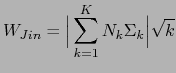 | (2.15) |
where  is the number of clusters considered,
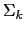 is the covariance matrix of cluster 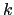, with 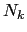
acoustic segments and indicating the determinant.
is the number of clusters considered,
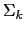 is the covariance matrix of cluster 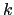, with 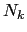
acoustic segments and indicating the determinant.
Around the same time, in Siegler et al. (1997) the KL2 divergence distance was used as a distance metric and a stopping criterion was determined with a merging threshold. It shows that the KL2 distance works better than the Mahalanobis distance for speaker clustering. Also in Zhou and Hansen (2000) the KL2 metric is used as a cluster distance metric. In this work they first split the speech segments into male/female and perform clustering on each one independently; this reduces computation (the number of cluster-pair combinations is smaller) and gives them better results.
In general, the use of statistics-based distance metrics (not requiring any models to be trained) is limited in speaker clustering as they implicitly define distances between single mean and covariance matrices from each set, which in speaker clustering falls short many times in modeling the amount of data available from one speaker. Some people have adapted these distances and obtained multi-Gaussian equivalents.
In Rougui et al. (2006) they propose a distance between two
GMM models based on the KL distance. Given two models 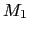 and
 , with 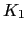 and
, with 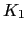 and  Gaussian mixtures each, and
Gaussian weights
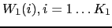 and
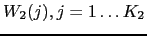, the distance from to
Gaussian mixtures each, and
Gaussian weights
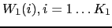 and
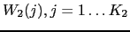, the distance from to  is
is
| 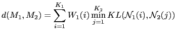 | (2.16) |
where 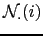 is one of the Gaussians from the model.
In Beigi et al. (1998) a distance between two GMM models is proposed by using the distances between the individual Gaussian mixtures. A distance matrix of 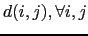 between all possible Gaussian pairs in the two models is processed (distances proposed are the Euclidean, Mahalanobis and KL) and then the weighted minima for each row and column is used to compute the final distance.
In Ben et al. (2004) and Moraru et al. (2005) cluster models are obtained via MAP adaptation from a GMM trained on the whole show. A novel distance between GMM models is derived from the LK2 distance for the particular case where only means are adapted (and therefore weights and variances are identical in both models). Such distance is defined as
| 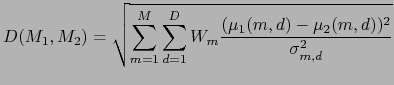 | (2.17) |
where
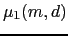 and
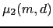 are the mean
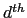 components for the mean vector for Gaussian  ,
,
 is the variance component for Gaussian
is the variance component for Gaussian
 and M, D are the number of mixtures and dimension of the GMM
models respectively.
and M, D are the number of mixtures and dimension of the GMM
models respectively.
In Ben et al. (2004) a threshold is applied to such distance to serve as stopping criterion, while in Moraru et al. (2005) the BIC for the global system is used instead.
Leaving behind the statistics-based methods, in Gauvain et al. (1998) and Barras et al. (2004) a GLR metric with two penalty terms is proposed, penalizing for large number of segments and clusters in the model, with tuning parameters. Iterative Viterbi decoding and merging iterations find the optimum clustering, which is stopped using the same metric.
Solomonov et al. (1998) also uses GLR and compares it to KL2
as distance matrices and iteratively merges clusters until it
maximizes the estimated cluster purity, defined as the average
over all segments and all clusters of the ratio of segments
belonging to cluster  among the 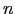 closest segments to segment
(which belongs to
among the 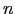 closest segments to segment
(which belongs to  ). The same stopping criterion is used in
Tsai et al. (2004), where several methods are presented to
create a different reference space for the acoustic vectors that
better represents similarities between speakers. The reference
space defines a speaker space to which feature vectors are
projected, and the cosine measure is used as a distance matrix. It
is claimed that such projections are more representative of the
speakers.
). The same stopping criterion is used in
Tsai et al. (2004), where several methods are presented to
create a different reference space for the acoustic vectors that
better represents similarities between speakers. The reference
space defines a speaker space to which feature vectors are
projected, and the cosine measure is used as a distance matrix. It
is claimed that such projections are more representative of the
speakers.
Other research is done using GLR as distance metric, including Siu et al. (1992) for pilot-controller clustering and Jin et al. (2004) for meetings diarization (using BIC as stopping criterion).
The most commonly used distance and stopping criteria is again
BIC, which was initially proposed for clustering in
Shaobing Chen and Gopalakrishnan (1998) and Chen and Gopalakrishnan (1998). The pair-wise
distance matrix is computed for each iteration and the pair with
biggest  BIC value is merged. The process finishes when all
pairs have a
BIC value is merged. The process finishes when all
pairs have a  BIC
BIC . In some later research
(Chen et al. (2002), Tritschler and Gopinath (1999),
Tranter and Reynolds (2004), Cettolo and Vescovi (2003) for Italian
language and Meinedo and Neto (2003) for Portuguese language)
propose modifications to the penalty term and differences in the
segmentation setup.
. In some later research
(Chen et al. (2002), Tritschler and Gopinath (1999),
Tranter and Reynolds (2004), Cettolo and Vescovi (2003) for Italian
language and Meinedo and Neto (2003) for Portuguese language)
propose modifications to the penalty term and differences in the
segmentation setup.
In Sankar et al. (1995) and Heck and Sankar (1997) the symmetric relative entropy distance (Juang and Rabiner, 1985) is used for speaker clustering towards speaker adaptation in ASR. This distance is similar to Anguera (2005) and equivalent to Malegaonkar et al. (2006), both used for speaker segmentation. It is defined as
| 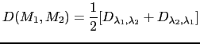 | (2.18) |
where 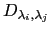 is defined as
| 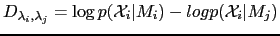 | (2.19) |
An empirically set threshold on the distance is used as a stopping criterion. Later on, the same authors propose in Sankar et al. (1998) a clustering based on a single GMM model trained on all the show and the weights being adapted on each cluster. The distance used then is a weighted by counts entropy change due to merging two clusters (Digalakis et al., 1996).
In Barras et al. (2004), Zhu et al. (2005),
Zhu et al. (2006) and later Sinha et al. (2005) propose a
diarization system making use of speaker identification techniques
in the area of speaker modeling. A clustering system initially
proposed in Gauvain et al. (1998) is used to determine an
initial segmentation in Barras et al. (2004),
Zhu et al. (2005) and Zhu et al. (2006), while a standard
speaker change detection algorithm is used in
Sinha et al. (2005). The systems then use standard
agglomerative clustering via BIC, with a  penalty value
set to obtain more clusters than optimum (under-cluster the data).
On the speaker diarization part, it first classifies each cluster
for gender and bandwidth (in broadcast news) and uses a Universal
Background Model (UBM) and MAP adaptation to derive speaker models
from each cluster. In most cases a local feature warping
normalization (Pelecanos and Sridharan, 2001) is applied to the features to
reduce non-stationary effects of the acoustic environment. The
speaker models are then compared using a metric between clusters
called cross likelihood distance (Reynolds et al., 1998), and defined
as
penalty value
set to obtain more clusters than optimum (under-cluster the data).
On the speaker diarization part, it first classifies each cluster
for gender and bandwidth (in broadcast news) and uses a Universal
Background Model (UBM) and MAP adaptation to derive speaker models
from each cluster. In most cases a local feature warping
normalization (Pelecanos and Sridharan, 2001) is applied to the features to
reduce non-stationary effects of the acoustic environment. The
speaker models are then compared using a metric between clusters
called cross likelihood distance (Reynolds et al., 1998), and defined
as
| 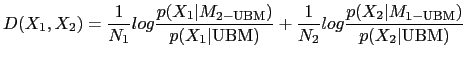 | (2.20) |
where 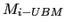 indicates that the model has been MAP adapted from the UBM model. An empirically set threshold stops the iterative merging process.
The same cross-likelihood metric is used in Nishida and Kawahara (2003) to compare two clusters. In this paper emphasis is given to the selection of the appropriate model when training data is very small. It proposes a vector quantization (VQ) based method to model small segments, by defining a model called common variance GMM (CVGMM) where Gaussian weights are set uniform and variance is tied among Gaussians and set to the variance of all models. For each cluster BIC is used to select either GMM or CVGMM as the model to be used.
Some other people integrate the segmentation with the clustering by using a model-based segmentation/clustering scheme. This is the case in Ajmera et al. (2002), Ajmera and Wooters (2003) and Wooters et al. (2004) where an initial segmentation is used to train speaker models that iteratively decode and retrain on the acoustic data. A threshold-free BIC metric (Ajmera et al., 2003) is used to merge the closest clusters at each iteration and as stopping criterion.
In Wilcox et al. (1994) a penalized GLR is proposed within an traditional agglomerative clustering approach. The penalty factor favors merging clusters which are close in time. To model the clusters, a general GMM is built from all the data in the recording and only the weights are adapted to each cluster as in Sankar et al. (1998). A refinement stage composed of iterative Viterbi decoding and EM training follows the clustering, to redefine segment boundaries, until likelihood converges.
In Moh et al. (2003) a novel approach to speaker clustering is proposed using speaker triangulation to cluster the speakers. Given a set of clusters 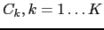 and the group of non-overlapped acoustic segments 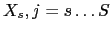 which populate the different subsets/clusters. The first step generates the coordinates vector of each cluster according to each segment (modeled with a full covariance Gaussian model) by computing the likelihood of each cluster to each segment. The similarity between two clusters is then defined as the cross correlation between such vectors as
| 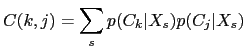 | (2.21) |
merging those clusters with higher similarity. This can also be considered as a projection of the acoustic data into a speaker space prior to the distance computation.
user 2008-12-08